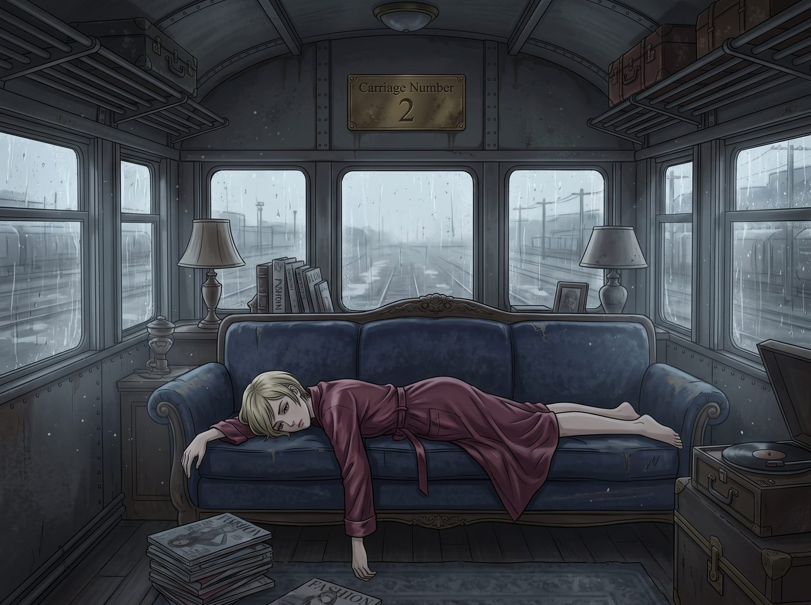
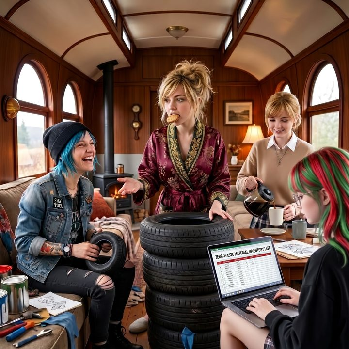

鹹魚的帳本


整整二十四小時，二號車廂裡瀰漫著一股死氣沉沉的低氣壓。
Victoria Chase，這位永遠昂著高貴頭顱、連喝水都要挑阿爾卑斯山氣泡水的名媛，此刻正穿著一件已經皺巴巴的真絲睡袍，像一條失去夢想的鹹魚，面朝下趴在沙發上，一動也不動。
一、告吹的防空洞
她原本的計畫是這樣的：用畫廊的儲備金，加上一筆家族信託的撥款，買下西雅圖地下藝術區那座廢棄的防空洞，等封城一結束，就在那裡為 Max 辦第一場個展。她甚至連名字都想好了，連 Chloe 那個相機鐵殼要擺在展廳正中央都規劃好了。
但現在，美債的蹺蹺板在儲備金上砸出了一個七十五萬美元的窟窿。防空洞的訂金付不出來，賣家已經轉頭去找別的買主。
擺在她面前的只剩兩條路：要麼首展無限期流產，成為圈子裡的笑柄；要麼，低著頭回到家族那棟冰冷的別墅，求他們撥款填補這個窟窿，然後忍受那種「我們早就說過妳不行」的眼神。
對 Victoria 來說，第二條路比讓她去吃卡夫起司通心粉還要屈辱一萬倍。
「她已經一天沒吃東西了。」Kate 端著一盤剛出爐的巧克力餅乾，擔憂地站在沙發旁，「連我特地加了雙份巧克力的餅乾她都不看一眼。這樣下去她會低血糖暈倒的。」
二、不是錢的問題
坐在工作台前的 Chloe 煩躁地轉著手裡的扳手：「老實說，我真的很難共情這種『哎呀我只剩下四百萬了我的人生完蛋了』的痛苦。這世上多的是人連下個月的房租都交不起。」
「Chloe，這不是錢的問題。」Max 坐在沙發另一頭，輕輕嘆了口氣，「這是獨立的問題。如果 Victoria 回去求她家裡，就等於承認她這輩子都只是個離不開家族羽翼的附屬品。那種被人用錢牽著走、居高臨下施捨的感覺……我們在 Lily 身上還沒看夠嗎？」
Chloe 轉扳手的動作猛地停住了。
她想起了自己當年為了反抗 David，寧願在廢車場的破床墊上過夜也不肯回家的那些晚上。骨子裡那股對抗權威的龐克血液，突然產生了某種詭異的共鳴。
「草。」Chloe 扔下扳手，大步走到沙發前，一把揪住 Victoria 的睡袍，硬生生把這條鹹魚從沙發上拽了起來。
「妳幹什麼！放開我！讓我死在這裡！」Victoria 虛弱地掙扎著，眼眶紅腫。
「死個屁！不就是買不起那個防空洞了嗎？」Chloe 瞪著她，「妳以為真正的藝術是什麼？是用五百美元一瓶的香檳堆出來的嗎？真正的藝術是從廢墟裡長出來的！」
她指著窗外營地邊緣那座廢棄的林區倉庫：「沒有七十五萬，我們就辦一場零預算的地下游擊展！找個破倉庫，用報廢車燈當照明！沒有名流排場，只有真正懂的人！這才叫獨立畫廊，懂嗎？！」
Victoria 呆住了。她那顆被頂級奢華浸泡了二十幾年的大腦，第一次受到這種狂野的衝擊。
「在廢棄倉庫裡……辦展？」她喃喃自語，「可是……我連還剩多少錢能動都不敢看……」
三、攤開的帳
一直在一旁安靜敲鍵盤的 Lily 站了起來。
她沒有畫什麼複雜的結構圖，也沒有用什麼華麗的術語。她只是把筆電轉過來，放在 Victoria 面前的茶几上。螢幕上是一張乾淨到近乎樸素的表格。
「Victoria 學姐，我昨晚把畫廊的帳全部重新對了一遍。」Lily 推了推眼鏡，「您可能會希望我說些好聽的話，但我先說實話。」
Victoria 緊張地嚥了一口唾沫。
「第一，那七十五萬拿不回來了。」Lily 說，「這筆虧損在稅法上可以結轉，以後可以拿來抵銷您自己的投資收益，每年也能抵一小部分一般所得。但畫廊賣畫是經營收入，不是資本利得，所以它不會變成什麼免稅金牌。它就是一筆學費，沒有別的名字。」
Victoria 的臉又白了一層。
「但是第二，」Lily 的手指往下滑了一行，「儲備金還剩四百二十五萬。畫廊的租約、保險、兩個員工的薪水、未來三年的基本營運，全部都在這裡面，綽綽有餘。」
她抬起頭，看著 Victoria：
「您沒有破產，學姐。畫廊也沒有倒。您失去的，只是一場原本打算用來向家族示威的奢華開幕。」
Victoria 盯著那張表格，很久沒有說話。
那些數字沒有任何魔法，冰冷、樸素，甚至有點無情。但正是這份無情，把她從「我是個徹底失敗的白痴」的深淵裡，拉回了一個比較能承受的地方：我只是辦不起排場了。
「所以……」她的聲音還在發抖，「我不需要回去求他們。」
「不需要。」Lily 說，「只是您的首展，得換一種辦法。」
四、女王歸位
Victoria 慢慢地坐直了身體。
她看了看那張表格，看了看窗外那座破倉庫，又看了看站在沙發邊、還揪著她睡袍衣角的 Chloe，和一臉期待的 Max。
然後，她一把抓起桌上 Kate 烤的巧克力餅乾，狠狠地咬了一大口。
「Chloe 說得對。」她嚼著餅乾，眼神裡那種屬於老錢家族的精明與高傲，正在一點一點地回來，「我不需要水晶吊燈。我們就在那個破倉庫裡辦。我要把那些等著看我笑話的人都請來，讓他們穿著高定西裝站在漏水的鐵皮屋頂底下，看著一場沒有 Chase 家一分錢的展覽。」
「Max！」她轉過身，像個真正的女王一樣發號施令，「帶上妳的相機！妳還是我首展的簽約藝術家！Chloe，那個相機鐵殼，照樣給我放在正中央！」
Max 愣了一下，隨即露出燦爛的笑容：「樂意效勞，老闆。」
二號車廂再次熱鬧了起來。沒有聯邦機構買單，沒有稅務魔法，也沒有低頭認輸。只是一份誠實的帳、一點街頭的龐克精神，和一群不肯讓她趴著的朋友。
Max 舉起相機。鏡頭裡，Victoria 嘴裡叼著半塊餅乾，正興奮地和 Chloe 討論怎麼用廢舊輪胎搭展台；Kate 在一旁笑著倒咖啡；而 Lily 已經打開了一張新的表格，標題是：零預算展覽物資清單。
「喀嚓。」
Max 在照片背面寫下：
『規則第六十九條：在二號車廂，虧損不是終點。先把帳攤開，再決定要不要趴著。通常，不用趴太久。』